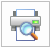
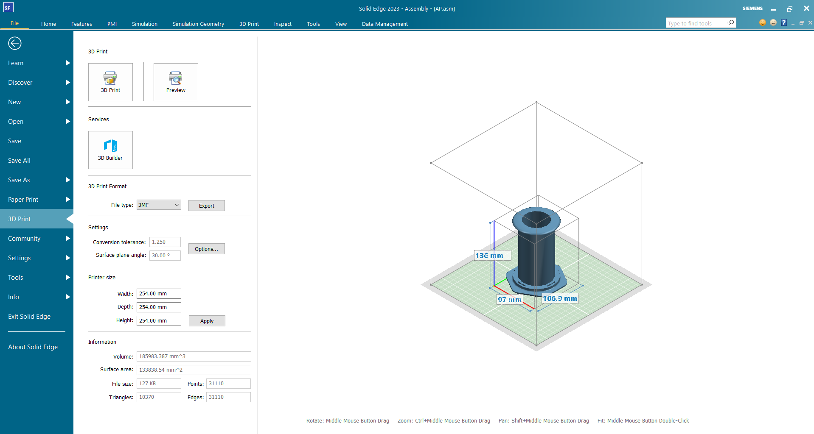
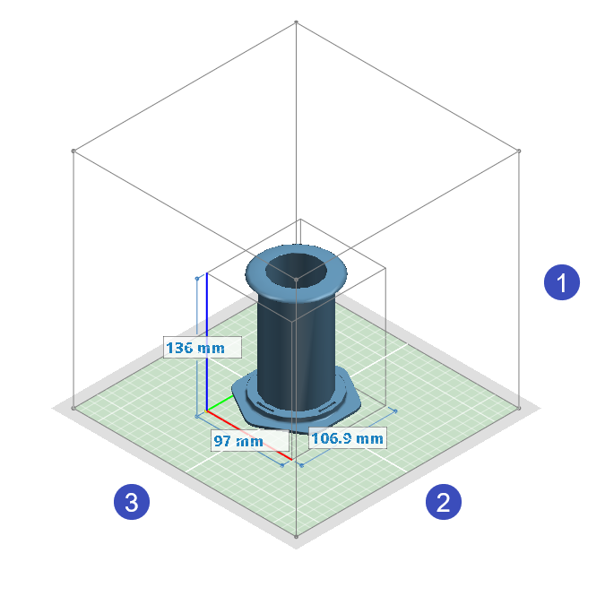
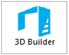

Using the 3D Print page
The 3D Print page on the File menu groups the 3D print-related commands and other functions that you need to generate a 3D prototype of your part, sheet metal, or assembly model.
Before you send any model to a 3D printer, especially an imported, or reverse-engineered, or structurally optimized mesh model, you can use the commands on the 3D Print tab to prepare it for printing—Physical Thread, Delete Voids, Reorient, Print Material—and to validate that it can be printed successfully—Wall Thickness, Overhang, Print Validations.
3D Print basics
-
The functions on the 3D Print page operate on the model document that is open in the active window in Solid Edge. Before accessing this page, change the view orientation and zoom level of the model. Aesthetic attributes such as model colors, face styles, textures, and materials are not shown on the model unless you select 3MF as your output file type.
Note:If you want to prevent parts from printing in the output, do not hide them. Instead, you must detach them or delete them.
-
When you first display the 3D Print page, the Preview command is active

.The preview in the right pane displays the model centered on the green printer bed. If the model is larger than the set printer size in any direction, the print volume adjusts to the size of the model .If there is no 3D printer driver installed on your computer, then the information shown is for a sample printer.
The dimensions shown on the model are relative to the model coordinate system. The cardinal axes are indicated by color (X=red, Y= green, Z=blue).
-
In the 3D Print Format section, use the File Type list to select the file format you want to use for 3D printing. Changing the file type also updates the model in the preview pane. For more information, see Selecting a file format for additive manufacturing.

-
When printing directly to a 3D printer, compare the printer volume information in the Printer Size section with the model volume to determine whether the model is scaled accurately to fit the print bed. You can use the 3D Print tab→Prepare group→Reorient command to position the part model in the printer space.
You can type new values in the Height (1), Width (2), and Depth (3) boxes and then select Apply to change the printer volume shown in the preview pane. While this only affects the preview, it does provide some feedback about the size of the 3D printer bed that is required to print your model.

-
In the Settings section, the tolerance values shown control the appearance of the 3D printed output. You can change these and other options by selecting the Options button to open the Export Options dialog box.
Example:The Conversion Tolerance setting controls the tessellations (faceting) on the model. A higher tessellation value produces a coarser, more faceted model. A lower tessellation value produces a finer, smoother model.
The Surface Plane Angle setting controls the accuracy of fine detail on the model.
Manipulating the model in the 3D Print preview pane
You can zoom, pan, rotate, and fit the model in the preview window. Some of these shortcuts are also listed along the bottom of the preview pane.
|
To |
Do this |
|
Zoom |
Ctrl+RMB, or position the cursor over the model preview, and then roll the scroll
wheel |
|
Pan |
Ctrl+Shift+RMB, or Shift+Hold the middle mouse button as you move the mouse across the model preview window. |
|
Rotate |
Shift+RMB, or hold the middle mouse button as you move the mouse using small circular motions in the model preview window.
|
|
Fit |
Double-click. |
 to zoom in and out.
to zoom in and out.
Sending the model to the 3D printer
When you are ready to send the model to the 3D printer, you can choose from the following options:
-
Select the Export button to save the selected file type to disk. For more information, see Save a 3D print file to disk.
-
Select the 3D Print command to print the file directly from your desktop (Windows 10). For more information, see Print directly to a 3D printer.
-
Select the 3D Builder command

to open the file in a new window in the Microsoft 3D Builder application. You can use the 3D Builder application to visualize and edit the .stl or .3mf file before you send it to a 3D printer. For example, you can emboss text, split it, smooth the 3D object, merge two 3D objects, and subtract intersecting geometry. For more information, see Open a Solid Edge file in 3D Builder.
How do I
Print directly to a 3D printerOpen a Solid Edge file in 3D Builder
Scale a model for 3D printing
Save a 3D print file to disk
Create a 3D Print material
Validate a 3D print model
Check wall thickness for 3D print
Learn more
Printing solid modelsLook up more details
Selecting a file format for additive manufacturingOverhang command
Overhang command bar
Print Material command
Print Validations command
Print Validations dialog box
Wall Thickness command
Wall Thickness command bar
Physical Thread command
Physical Thread command bar
Reorient command
Reorient command bar
Quick links
Working with .stl documents in Solid EdgeExport Options for STL (.stl) dialog box
Export Options for 3MF dialog box
Related Topics
Delete Voids commandDelete Voids command bar